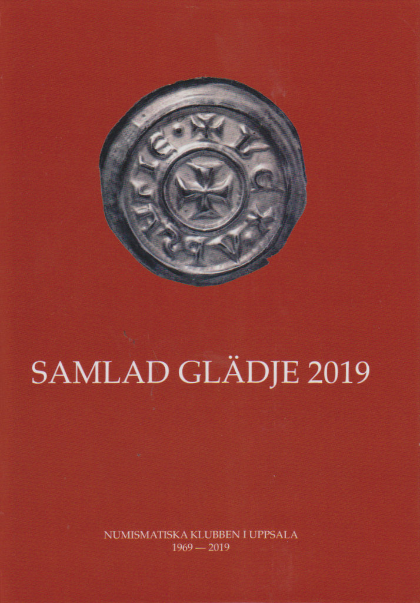
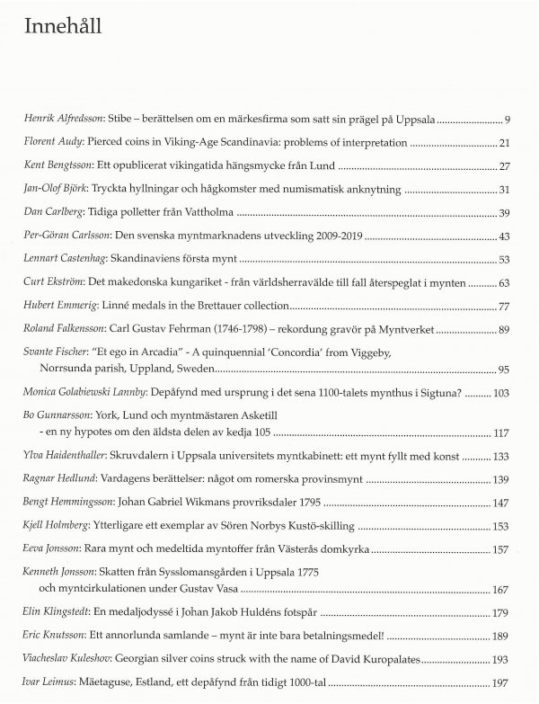
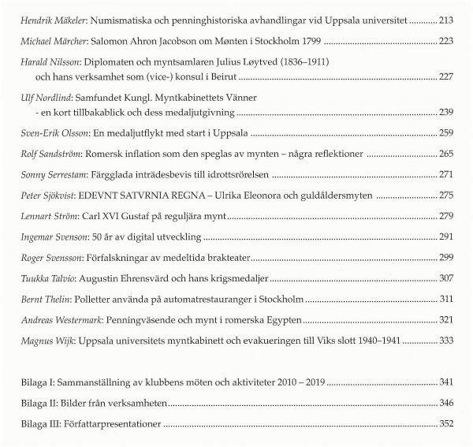

Program
Mötesreferat
Bli medlem
Historik
Stadgar
Samla mynt
Jubileumsbok
Jubileumsbok 2009
Jubileumsbok 2019
Småskrifter
Auktionskatalog
Länkar
Kontakt
Numismatiska klubben i Uppsala 1969-2019
|
Numismatiska klubben i Uppsala grundades 26 mars 1969. För att uppmärksamma 50-års jubileumet, har klubben utgivit en jubileumsbok. Boken, som är inbunden, omfattar 356 sidor med 38 artiklar och är rikt illustrerad i färg.
Priset för boken är 300 kr. Inklusive porto blir det 350 kr, som kan betalas på NKU:s bankgiro 871-4578 vid beställning. Skicka gärna meddelande om beställning samt postadress till info@nku.nu. |
 |
|


Henrik Alfredsson: Stibe - berättelsen om en märkesfirma som satt sin prägel på Uppsala (pdf) Florent Audy: Pierced coins in Viking-Age Scandinavia; problems and identification (pdf) Kent Bengtsson: Ett opublicerat vikingatida hängsmycke från Lund (pdf) Jan-Olof Björk: Tryckta hyllningar och hågkomster med numismatisk anknytning (pdf) Dan Carlberg: Tidiga polletter från Vattholma (pdf) Per-Göran Carlsson: Den svenska myntmarknadens utveckling 2009-2019 (pdf) Lennart Castenhag: Skandinaviens första mynt (pdf) Curt Ekström: Det makedonska kungariket - från världsherravälde till fall återspeglat i mynten (pdf) Hubert Emmerig: Linné medals in the Brettauer collection (pdf) Roland Falkensson: Carl Gustav Fehrman (1746-1798) - rekordung gravör på Myntverket (pdf) Svante Fischer: “Et ego in Arcadia” – A quinquennial ‘Concordia’ from Viggeby parish, Uppland, Sweden (pdf) Monica Golabiewski Lannby: Depåfynd med ursprung i det sena 1100-talets mynthus i Sigtuna? (pdf) Bo Gunnarsson: York, Lund och myntmästaren Asketill - en ny hypotes om den äldsta delen av kedja 105 (pdf) Ylva Haidenthaller: Skruvdalern i Uppsala universitets myntkabinett: ett mynt fyllt med konst (pdf) Ragnar Hedlund: Vardagens berättelser: något om romerska provinsmynt (pdf) Bengt Hemmingsson: Johan Gabriel Wikmans provriksdaler 1795 (pdf) Kjell Holmberg: Ytterligare ett exemplar av Sören Norbys Kustö-skilling (pdf) Eeva Jonsson: Rara mynt och medeltida myntoffer från Västerås domkyrka (pdf) Kenneth Jonsson: Skatten från Sysslomansgården i Uppsala 1775 och myntcirkulationen under Gustav Vasa (pdf) Elin Klingstedt: En medaljodyssé i Johan Jakob Huldéns fotspår (pdf) Eric Knutsson: Ett annorlunda samlande - mynt är inte bara betalningsmedel! (pdf) Viacheslav Kuleshov: Georgian silver coins struck with the name of David Kuropalates (pdf) Ivar Leimus: Mäetaguse, Estland, ett depåfynd från tidigt 1000-tal (pdf) Hendrik Mäkeler: Numismatiska och penninghistoriska avhandlingar vid Uppsala universitet (pdf) Michael Märcher: Salomon Ahron Jacobsson om Monten i Stockholm 1799 (pdf) Harald Nilsson: Diplomaten och myntsamlaren Julius Löytved (1836-1911) och hans verksamhet som (vice-)konsul i Beirut (pdf) Ulf Nordlind: Samfundet Kungl. Myntkabinettets Vänner - en kort tillbakablick och dess medaljutgivning (pdf) Sven-Erik Olsson: En medaljutflykt med start i Uppsala (pdf) Rolf Sandström: Romersk inflation som den speglas av mynten – några reflektioner (pdf) Sonny Serrestam: Färgglada inträdesbevis till idrottsrörelsen (pdf) Peter Sjökvist: REDEVNT SATVRNIA REGNA – Ulrika Eleonora och guldåldersmyten (pdf) Lennart Ström: Carl XVI Gustaf på reguljära mynt (pdf) Ingemar Svenson: 50 år av digital utveckling (pdf) Roger Svensson: Förfalskningar av medeltida brakteater (pdf) Tuukka Talvio: Augustin Ehrensvärd och hans krigsmedaljer (pdf) Bernt Thelin: Polletter använda på automatrestauranger i Stockholm (pdf) Andreas Westermark: Penningväsende och mynt i romerska Egypten (pdf) Magnus Wijk: Uppsala universitets myntkabinett och evakueringen till Viks slott 1940-1941 (pdf) Bilaga I: Sammanställning av klubbens möten och aktiviteter 2010-2019 (pdf) Bilaga II: Bilder från verksamheten (pdf) Bilaga III: Författarpresentationer (pdf) | |